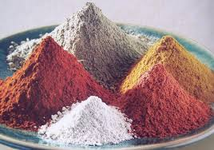

I COSMETICI
Benvenuto nel Mondo dei Cosmetici
Scopri la storia dei cosmetici, come si sono evoluti nel tempo e come influiscono sulla nostra bellezza quotidiana.
La Storia dei Cosmetici
I cosmetici sono una parte fondamentale della cura e della bellezza personale da millenni. Fin dall'antichità, civiltà come quella egizia utilizzavano ingredienti naturali per preparare prodotti di bellezza.

In Egitto, ad esempio, le donne usavano un mix di oli, unguenti e polveri per migliorare la propria pelle e il proprio aspetto. I più noti erano i cosmetici utilizzati dalle donne egizie per gli occhi, come il khol, un tipo di polvere nera che veniva applicato per accentuare lo sguardo.
Nel Medioevo, i cosmetici furono usati soprattutto per scopi religiosi o medicinali, ma fu con la rivoluzione industriale che i cosmetici iniziarono ad essere prodotti in massa e commercializzati.

L'Evoluzione dei Cosmetici
Con l'industria cosmetica moderna, i prodotti sono diventati sempre più sofisticati e accessibili. L'invenzione di nuovi ingredienti, come il silicone e gli acidi esfolianti, ha trasformato i trattamenti di bellezza.
Nel XX secolo, l'industria cosmetica ha visto un'enorme crescita grazie alla produzione di massa e alla nascita di marchi iconici come L'Oréal, Estée Lauder, e Chanel. Questi marchi hanno contribuito a rendere i cosmetici una parte essenziale della routine quotidiana di milioni di persone in tutto il mondo.
Oggi, i cosmetici non sono più solo per scopi estetici, ma anche per la cura della pelle e il benessere generale, con l'introduzione di linee di prodotti naturali e biologici.